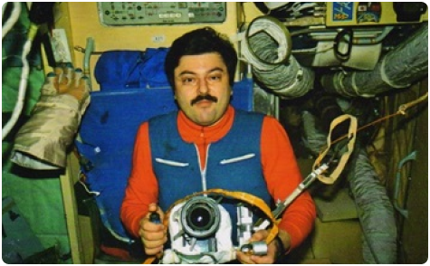
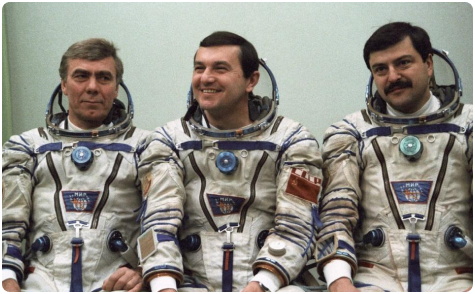
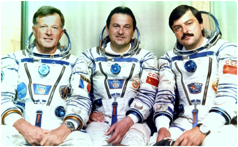
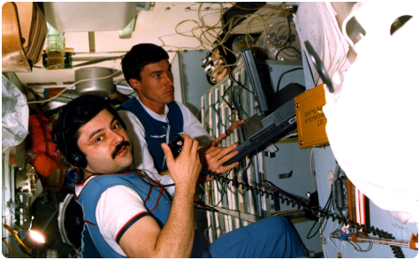
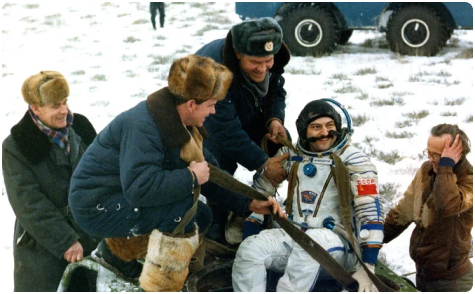

Муса
Манаров
Лётчик-космонавт СССР, полковник запаса, Герой Советского Союза. Заслуженный мастер спорта СССР.
Путь к звездам
Когда состоялся полет Юрия Гагарина в космос Мусе Манарову было всего 10 лет. И хотя Муса Хираманович, как и многие советские дети, читал научную фантастику и интересовался космосом, свой жизненный путь он изначально не планировал связывать с космонавтикой, больше всего его привлекала радиотехника. На инженера-радиотехника летательных аппаратов он и будет учиться. После окончания Московского авиационного института в 1974 году Муса начинает трудиться в научно-производственном центре «Энергия», где разрабатывались и разрабатываются различные технологии в области космической промышленности. В ходе профессиональной деятельности он занимался анализом состояния телеметрии бортовых систем (технологий, связанных с отправкой, получением, преобразованием и обработкой сигналов с орбиты).
Среди технического персонала космической инфраструктуры периодически проводили отбор в космические отряды. В 1978 году Манаров пробует подать заявление, успешно проходит медкомиссию, испытательные экзамены и зачисляется в отряд. По словам самого Манарова немалую роль при отборе его в кандидаты на космический полет сыграло не физическое здоровье, но полученные им технические знания и умения. После сдачи специального экзамена, на котором Муса показал высокие результаты, он и был зачислен в отряд.


Однако ждать полета пришлось долго. В течение нескольких лет он продолжал работать на Земле и проходил подготовку. В ходе неё будущим космонавтам приходилось не только проверять свои физические возможности, но и осваивать новые умения. В рамках подготовки к работе в открытом космосе испытуемые претерпевали 70-градусную жару, а также учились работать под водой (условия под водой приближенны к тем, в которых работают космонавты в открытом космосе).

В 1979 году Манаров в составе группы участвует в подготовке к полету на ещё только разрабатывающейся многоразовой транспортной космической системе «Буран» (разрабатывался как ответ на американский «Space Shuttle», и планировался как многоразовый космический корабль). В ходе программы он проходит пилотную подготовку, получает право пилотировать самолет. В 1982 году Манаров будет переведен в другой отряд. Единственный полет МТКС «Буран» состоится 15 ноября 1988 года и будет автоматическим, без людей на борту. Позднее программа будет и вовсе свернута.

В сентябре 1982 года Манаров входит в дублирующий экипаж второй основной экспедиции орбитальной станции «Салют-7», готовится в качестве бортинженера. С 1984 по 1985 год проходит подготовку в составе новой группы для полета на готовящуюся к запуску станцию «Мир». В марте 1987 года входит в дублирующий экипаж вместе с лётчиком-космонавтом Владимиром Титовым, готовится в качестве бортинженера. В мае 1987 их переводят в основной экипаж.

21 декабря 1987 года Манаров впервые отправится в космос на корабле «Союз ТМ-4» в составе третьей по счету основной экспедиции орбитальной станции «Мир» (1986 – 2001 гг.). На борту также находились командир корабля – лётчик-космонавт полковник Владимир Георгиевич Титов и космонавт-исследователь Анатолий Семенович Левченко. Манаров и Титов заменят на орбите Романенко и Александрова.
Экспедиция провела ряд биологических экспериментов, включая выращивание биологических кристаллов на установке в модуле Квант-1. Также Титов и Манаров проводили наблюдения галактик и звёздных групп в УФ части спектра на телескопе Глазар в том же модуле Квант-1.
Длительность экспедиций на станции «Мир» планомерно увеличивалась и в этот раз составила 365 суток и 23 часа. В ходе всего года Манарову и Титову пришлось трижды выходить в открытый космос для решения технических и научных задач, при том, что подобные выходы являются отдельным испытанием даже для подготовленных космонавтов.
Вернутся космонавты 21 декабря 1988 года. Таким образом Манаров вместе с Титовым установили очередной мировой рекорд по продолжительности непрерывного пребывания на орбите, что будет отмечено и в Книге рекордов Гиннесса. Только в 1995 году российский космонавт Валерий Поляков поставит новый рекорд, пробыв на станции 437 суток и 18 часов. По итогам своего первого полета Муса Манаров будет удостоен звания Героя Советского Союза, также ему будут вручены орден Ленина и медаль «Золотая Звезда».

2 декабря 1990 года Муса Манаров вновь отправится на орбитальную станцию «Мир» и снова в качестве бортинженера. В этот раз доставка будет осуществлена на космическом корабле «Союз ТМ-11». Командиром экспедиции был Виктор Афанасьев, также на борту был журналист японец Тоёхиро Акияма. Это был первый полет японского космонавта (пробудет в космосе около недели). Экспедиция продлится 175 суток 1 час 51 минуту 23 сек. В этом полете Манарову и Афанасьеву приходилось выходить в открытый космос 4 раза. Таким образом, общее количество выходов Манарова достигло 7

В свободное время на орбите Манаров занимался своим любимым делом
ставшим его профессией – радиотехникой, транслировал любительские
радиопередачи на Землю. По словам самого Манарова больше всего на
орбите ему не хватало домашней кухни, особенно в исполнении его мамы.
Вернулся из второго полета Муса Манаров 26 мая 1991 года, накопив в
своей космической карьере 541 день нахождения на орбите. 23 июля 1992
года он покинет отряд космонавтов по выслуге лет.
